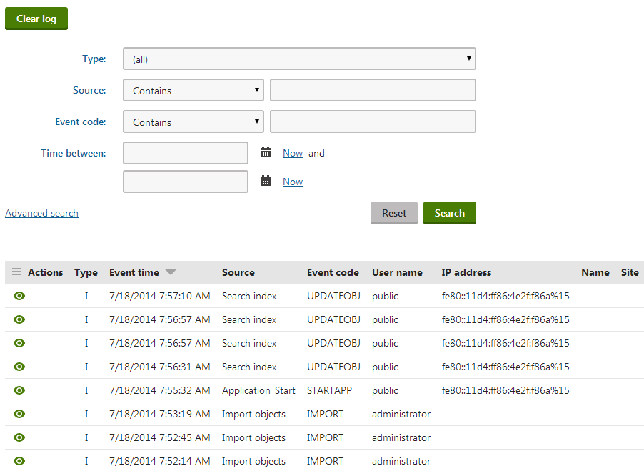

Working with the system event log
The event log stores information about all events that occur in the system. It is useful to view logged information if unwanted behavior occurs in the system and you want to find out where the problem originates or get additional details.
Viewing the event log
To view the event log, open the Event log application.

If you click Display event ( ) next to an event, the system displays a dialog with full details about the event.
) next to an event, the system displays a dialog with full details about the event.
Configuring the event log
You can configure the following event log settings:
General event log settings
You can configure the following settings for the event log in Settings -> System:
|
Setting location |
Description |
|
Event log size |
Limits the maximum number of events stored in the Event log.
|
|
Log metadata changes |
If enabled, changes of object and page metadata (i.e. when an object or a page is created, edited or deleted) are logged in the Event log. |
|
Log to database |
Indicates if events are logged to database. Doesn't override Event log size set to 0. |
|
Log to filesystem |
If enabled, the system writes the event log into the CMS\App_Data\logEvents.log file on the server's file system. Doesn't override Event log size set to 0. |
|
Log to trace |
Indicates if events are logged to trace. Doesn't overwrite Event log size set to 0. |
|
Use EventLog trace listener |
Indicates if the system logs events in your Windows Event Viewer. Use the Modify feature of the Kentico installer, if you haven't turned on the Registration of Kentico in Windows Event Log option when installing Kentico. |
You can also configure the event log by adding keys to the appSettings section of your application's web.config file. The keys work in combination with the settings listed above. For more information, see Reference - Web.config application keys.
Logging page not found exceptions
You can enable logging of Page not found exceptions in the event log. To do so:
Open the Settings application.
Select the Content category.
In the Page not found group, enable Log page not found exception.
Save the changes.
Configuring permissions for the event log
To allow users to work with the event log, configure permissions for your website's roles:
Open the Permissions application.
Select permissions for Modules and the Event log.
Assign the following permissions to roles:
Read - allows members of the roles to access the event log. Only users with the Global administrator privilege level can view events logged on a global application level.
Clear log - allows members of the roles to delete the records in the event log.
Logging system events to trace
You can set up Kentico to log application events in trace. You can then implement your own listener, such as the TextWriterTraceListener or use the out-of-the-box Kentico functionality to log events into the Windows Event Viewer.
To enable logging of system events to trace:
In Kentico, open the Settings application.
Select the System category.
In the Event log settings group, enable Log to trace.
Save the changes.
Kentico now logs system events to trace. You can now implement your own listener, such as the TextWriterTraceListener.
Logging system events in the Windows Event Viewer
You can set up Kentico to log application events in the Windows Event Viewer. Note that to do that, Kentico uses the EventLogTraceListener.
Requirements for IIS 8.5 and newer
If your website is hosted on IIS 8.5 or newer, you need to enable sending of logging information to Event Tracing for Windows (ETW). For more information, see the Logging to Event Tracing for Windows in IIS 8.5 article (select the ETW event only or Both log file and ETW event option for the Log Event Destination in IIS).
Registering Kentico in Windows Event Log
Run the Kentico installer.
Select your country, accept the license agreement, and click Next.
Modify the installation that you want to register in Windows Event Log.
Select the Registration of Kentico in Windows Event Log check box.
Apply Changes.
The installer registers Kentico in the Windows Event Log.
Enabling logging of Kentico events into Windows Event Log
In Kentico, open the Settings application.
Select the System category.
In the Event log settings group, enable Log to trace and Use EventLog trace listener.
Save the changes.
Kentico now logs system events to both the Kentico event log and Windows Event Viewer.
Setting up e-mail notifications for errors
You can configure the system to automatically send e-mail notifications whenever errors occur in the application.
Open the Settings application.
Select the System category.
Enter the target e-mail addresses for the notifications into the Error notification e-mail address setting.
Use semicolons to separate multiple addresses.
Type a sender address into the No-reply e-mail address settings.
The notification e-mails use the sender address in their From field.
Save the settings.
Event log API
You can find an API example of logging events into the event log in Designing secure error messages. More examples are provided in the API examples documentation.
Disabling logging for specific types of events
If you wish to disable logging for events of a specific type, you need to use custom code. See Customizing event logging for more information.